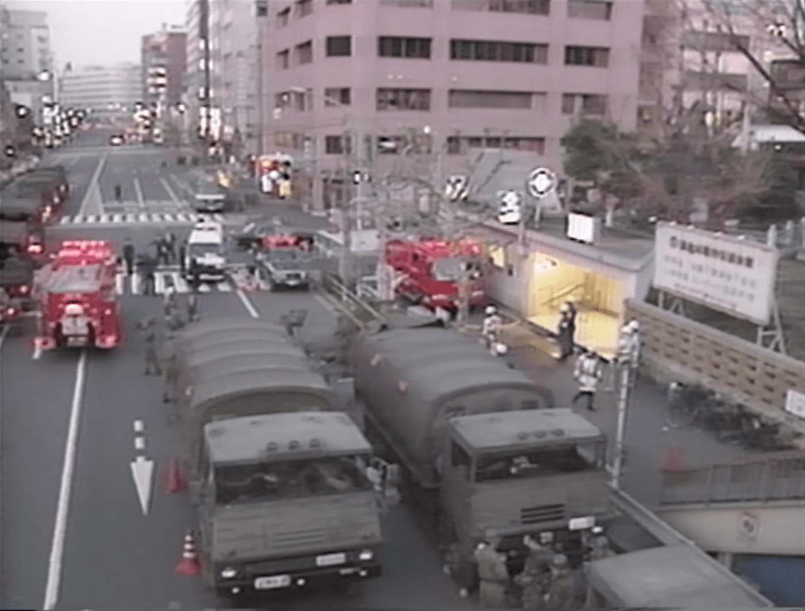
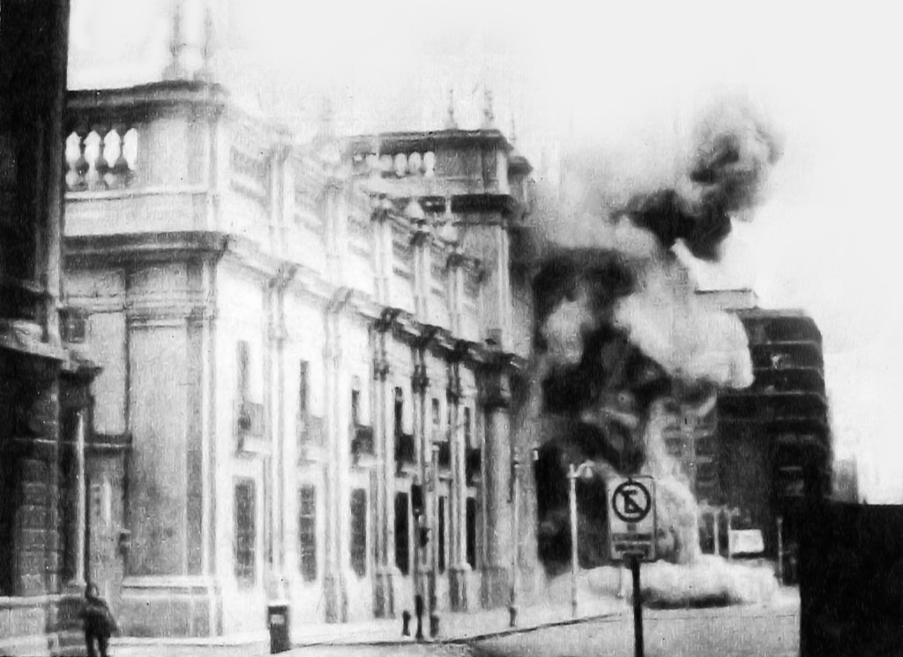

摘要
摘要：本论文探讨了政治文学在当代社会中的表现，重点分析了村上春树的《地下》和聂鲁达的《漫歌》。首先，界定了政治文学的概念，区分了政治倾向文学与政治斗争文学，特别聚焦于前者，强调其在当代社会中的广泛接受度与文学魅力。接着，论文讨论了村上春树通过《地下》对1995年东京地铁沙林毒气事件的反思，揭示了日本社会的冷漠与麻木，提出社会对深层次问题的忽视。论文同时还分析了聂鲁达如何通过其诗作表达政治态度，尤其是在拉美解放与革命斗争中的参与。最后，论文总结了全球化时代文学与政治的互动，认为文学不仅是文化交流的纽带，也推动了政治全球化与社会变革。通过跨文化的对话，文学作品成为理解当代政治格局的重要工具。
关键词：政治倾向文学；社会反思；日本文学；拉美文学
政治文学定义
1.1政治文学定义
根据刘江2012年8月刊登在《重庆工商大学学报》的《政治文学论》一文中的相关论述，政治文学被描述为：反映与政治相关的生活，表达作者的政治意向，或参与政治斗争的文学，其核心就是文学与政治的紧密联系。它包括两种：一是政治倾向文学；二是政治斗争文学。其核心在于文学与政治的紧密联系。[1]笔者在本文中所要探讨研究的属于前者，即政治倾向文学，区别于上世纪中国革命时期所著的直接服务于政治斗争的文学，此类著作作者通常不直接参与政治相关工作或担任相关职务，更多的是以大众或社会视角出发，关注更加普遍的社会生活，而非抽象的决策机构视角。这种类型的文本最直接的优点是更容易被大众，尤其是高校学生群体所接触并接受，因为没有脱离严肃文学的基本范畴，保留了原有的阅读价值和文学魅力，作为读物的市场接受性更强，这是针对目标群体进行研究的必要前提。
1.2 新的发展方向
当今时代，我们可以清楚感受到年轻群体越来越陷入新自由主义影响下的精致利己主义陷阱，最直接的表现就是愈加自私的叙事风格、愈加尖锐的矛盾与对立、对信息的接受越来越抗拒导致的信息茧房和消息闭塞、独立思考的逐渐滞塞。这些现实问题表明，我们对社会舆论的控制力正在逐步减弱，而整个社会的思想风貌是我们与国际社会进行交流对话最直接的手段之一，因此随之而来的问题就是来自国际社会的误解和国际交流话语权的逐步丧失。针对某些具体的社会问题的讨论没有拓展出足够丰富的视角，大多数讨论者都秉持着非黑即白的态度，各执一词，相互对立，将讨论双方完全分割成两个阵营，这不是解决问题应有的讨论范式，而是各自陷入自我中心主义思维模式的结果。
综上，我们应当就此问题展开深入讨论和研究，发展出一种新的政治思维范式以改善当下泛政治参与行为的叙事方式。
村上春树《地下》中的社会反思
近代日本最具影响力的社会思潮之一，便是二战之后的日本文学运动。在这一时期，代表性作家如坂口安吾、太宰治和织田作之助等，形成了“无赖派文学”的流派。无赖派作家以反叛常规、反对权威和道德束缚为特色，他们的创作充满自嘲与自虐，关注病态和阴郁的主题，带有颓废情怀。这一流派的作品常涉及“人生虚无”、“自杀”和“灰暗未来”等主题，反映了当时日本社会的压抑氛围。[2]年轻人缺乏明确的奋斗目标，许多人试图通过文学来寻求自我认同，然而，像太宰治这样的人物，即便在追求文学奖项的道路上未能获得应有的认可，依然面临着深刻的内心焦虑。太宰治在文学创作中追寻法国文学的影响，但在实践中却屡屡碰壁，直至去世，他最大的成就也仅是北村透谷文学奖。
战后日本社会在这种文化氛围中逐渐迷失，教育体系所传递的价值观束缚了国民的思想和行为，民众对生活中的许多问题显得迟疑且无力，尤其是在面对日本作为战败国的身份时，政府和民众展现了明显的无能感。这种无能不仅体现在国家政治和社会治理上，也逐渐渗透进了日常生活的各个方面。
随着三岛由纪夫、川端康成、大江健三郎等战后作家的相继逝世，日本文学进入了一段较为沉寂的时期。虽然石黑一雄以英国国籍获得诺贝尔文学奖，但在当代日本作家中，村上春树无疑是最为突出的代表之一。村上春树以其独特的创作风格和深刻的社会观察，成为这一时代的文化象征。
村上春树活跃在上世纪70至80年代，正是日本泡沫经济的繁荣时期。那时的东京，乃至整个日本，都沉浸在经济繁荣与娱乐氛围之中，社会转型带来了对未来的憧憬与希望。相比战后创伤的叙事，村上春树的作品更多地展现了对当代社会的关注。然而，尽管日本经济迅速发展，社会中仍然存在许多值得反思的深层问题。
村上春树一直关注日本社会的种种现象，尤其在《地下》一书中，深入探讨了社会的冷漠与麻木。这本书源自1995年3月20日发生的东京地铁沙林毒气事件。当时，邪教组织奥姆真理教在东京地铁三条线路中释放沙林神经毒剂，造成13人死亡，约6300人受伤，近1000人暂时失明。[3]这一事件震惊了全日本，村上春树通过访问受害者及相关人员，真实地还原了事件的经过以及民众的反应。

作为作家，村上春树具有强烈的社会责任感，他深知自己有义务反映时代的问题。通过《地下》，村上不仅揭示了事件的细节，更深刻质疑了日本社会的麻木与冷漠。他在书中提出了一个核心问题：为何在一个充满高效应急响应和资源调配的社会中，仍然会表现出如此缺乏人文关怀和社会温度的冷漠？
村上所指的“麻木”并非仅指事件处理过程中的低效，而是指社会对深层次问题的忽视。在事件发生后，虽然社会各方迅速展开救援工作，相关人员得到了及时救治，犯罪嫌疑人也被捕，但对邪教暴力行为的反思和对这种现象的深刻批判却显得格外不足。在日本社会中，个人的苦难往往被视为个人问题，尽管他人可以表示同情并提供帮助，但社会整体上对受害者的关注却常常局限于表面，缺乏对根本原因的追问。
村上春树所反映的“麻木”是社会文化中长期压抑与冷漠的结果。日本社会的历史文化积淀，以及长期以来的社会教化，使得个体之间的关系变得疏离和冷淡。在这种社会氛围下，许多人对他人的苦难表现出冷漠的态度，甚至有时连最基本的同情心也被压抑。近几十年来，东亚地区尤其是日本和韩国，因社会压力和文化因素导致自杀率居高不下，这一现象反映了社会情感的极度冷漠。
更令人担忧的是，这种冷漠正在蔓延到中国社会。中国作为人口大国，其社会治理面临着前所未有的挑战。复杂的社会结构和深刻的文化变迁，使得社会中越来越多的人在面临问题时选择逃避和冷漠。尤其是在数字化时代，个别社会意见领袖的言论往往能激发部分群体的情绪波动，甚至导致社会认知的分裂。这种现象不仅加剧了个体之间的隔阂，也可能对社会整体的和谐与稳定造成潜在威胁。
因此，村上春树的《地下》不仅是一部对特定事件的纪实文学，更是对整个社会冷漠心态的深刻反思。对于我们来说，这本书具有重要的启发作用，提醒我们要警惕社会中人文关怀的缺失，反思如何在现代社会中建立更具温度和关怀的社会机制。
聂鲁达的拉美解放文学与人的政治
拉美文学是西语文学的一个主要地区分支，诞生在这片土壤上的文学作品丝毫不比伊比利亚半岛本土文学产物逊色，已经衍生出了独属于自己的文学特色，并在全世界范围内得到了广泛认可和关注。
上世纪拉美地区最大的政治矛盾，就是由前智利总统、智利军事独裁者皮诺切特发起的流血政变活动。1973年，皮诺切特在美国支持下发动了流血政变，推翻了民选左翼总统阿连德，建立右翼军政府。任内进行新自由主义经济改革，使智利经济快速发展，但另一方面同时残酷打击知识分子、民主人士及共产主义支持者，数万人称他们遭到了皮诺切特政府的酷刑折磨。而遭受皮诺切特政府迫害的知识分子之中，就包括伟大的智利民族诗人、外交官、诺贝尔文学奖得主巴勃罗·聂鲁达。

由于被智利委派为驻马德里大使期间经历过西班牙内战，聂鲁达对倡导共产主义的苏联充满敬仰，同时也对诸位苏联的领导人评价颇高，这样的经历也将他塑造成了一位朴素意义上的共产主义者，后来他对斯大林的崇拜愈发狂热，直至1939年《苏德互不侵犯条约》签署时达到顶峰。这一情况直至诗人晚年才开始反思自己的狂热，并表示：“在那时，斯大林对我们而言是希特勒军队的征服者。”聂鲁达于1957年访问了中国，这是诗人第二次与中国产生紧密联系，第一次则是在自己的诗集《漫歌》中的《愿那劈木工醒来》写到：“你们千万不要到中国登陆，卖国贼蒋介石，等待他的将会是镰刀与炸药堆成的火山。”[4]他一直积极关注着全世界范围内的反法西斯战争，也理所应当地关注到了中国的革命情况，可以看到他具有反法西斯主义精神和民族主义政治情怀，而《漫歌》这部诗集正是反映诗人政治主张的主要作品。《漫歌》可以分为两个部分，前半部分以赞美拉美狂野而富有生命力的自然风貌为主，后半部分则主要聚焦于政治与革命斗争，诗人花费大量笔墨讴歌和赞美为解放拉美诸国做出贡献的民族战士，其中不乏有为革命事业献出生命的英雄，同时也批判了许多出卖人民和国家的卖国者，因此我们完全可以认为这是一部反映聂鲁达本人政治理想与政治态度的诗歌合集，浓缩着聂鲁达前半生对这种目标的追求。
直到西班牙内战爆发，聂鲁达才开始强烈地涉足政治，这也使得他的文学创作风格发生了极大的转变，从原来的个人取向转变为对集体事务的关注，这是他积极参与政治事务的思想前提，不过也因为他独特的外交身份导致其涉足政治的方式不同寻常。
政治事务在我国民众眼里总是会被抽象为单纯与决策机构和政府机关相关的事务而离普罗大众很远，这完全是错误的认识。从聂鲁达的生平与创作过程来看，他对于政治的态度是脱胎于自己的求学经历、工作见闻和民族情怀，以及对于政治领袖的个人崇拜，事实上单纯从文学创作的角度而言，聂鲁达最为人所熟知的是他狂野浪漫的情诗，而非政治文学，这足以证明个人参与政治的方式不必拘泥于对政府机关的盲目迷信，汉娜阿伦特在《人的境况》一书中表示：“尽管人类条件的所有方面都在某种程度上与政治相关，但复数性却是一切政治生活特有的条件——不仅是必要条件(conditio sine qua non)，而且是充分条件(conditio per quam)。因此在罗马人(也许是我们已知的最富政治性的民族)的语言中，“活着”等于说“在人们中间”(inter homines esse)，“死去”等于说“不再在人们中间”(inter homines esse desinere)。行动的复数性条件。”[5]不再存在于人群之中，即失去了复数性，变成了纯粹个体性的人，也即失去了参与政治的权利和可能，这是“社会性死亡”的另一重含义。也即：参与政治是参与集体性的事务，而非必须参与官方对稀缺性资源分配的分配正义，这是“人的政治”一说最核心的理论基础，也是我们需要着重去关注和培养的个体思维模式，永远不要认为自己可以置身任何一件事之外。
结语
在全球化日益加深的今天，文学作品通过跨语言与文化的传播，成为了反映政治全球化的重要载体。这种文化交流不仅仅是语言和艺术形式的互相借鉴，更是在政治与社会结构变迁中的深刻交汇。通过这种跨文化的对话，文学作品能够传递关于民族独立、社会公正、个人自由等重大议题的反思与批判，进而推动全球政治的反思与进步。政治全球化与文学的互动不仅体现在作品内容的借鉴与影响上，也反映在作者个人政治情感的全球化表达上。在这一过程中，文学不再是孤立的文化现象，而是一个有力的政治驱动力，推动着全球社会对共同命运的关注与思考。
因此，从村上春树和聂鲁达的作品出发，我们可以看到文学创作在全球化时代中的双重作用：一方面，它是文化与政治交流的纽带；另一方面，它又是推动政治全球化与社会变革的潜在力量。通过跨文化的文学借鉴与交流，全球化的政治命题得以更加多元化地呈现，文学也因此成为理解当代世界政治格局变化的重要途径。
参考文献
[1]刘江. 政治文学论[J]. 重庆工商大学学报(社会科学版), 2012: 87-92.
[2]刘炳范.论“无赖派”与日本战后文学的转型[J].东北亚论坛，2000：87-90.
[3]村上春树.地下[M].林少华译.上海：上海译文出版社，2019.
[4]巴勃罗·聂鲁达.漫歌[M].赵振江，张广森译.海口：南海出版公司，2021.
[5]汉娜·阿伦特.人的境况[M].王寅丽译.上海：上海人民出版社，2017.
致谢
在此，我要衷心感谢我的导师张雅琳讲师。感谢您在学术研究中给予的悉心指导和宝贵建议，您的耐心与专业让我在遇到困难时能够找到前进的方向。感谢您对我的支持与鼓励，您严谨的治学态度和敬业精神将始终激励我不断进步。没有您的帮助，这篇论文无法顺利完成，再次向您表示诚挚的感谢！
依据作者提供的原稿收录。原稿提交时间为 2024 年 12 月；此处保留正文、参考文献与致谢，省略提交表及联系方式。配图及图注为网站编排。